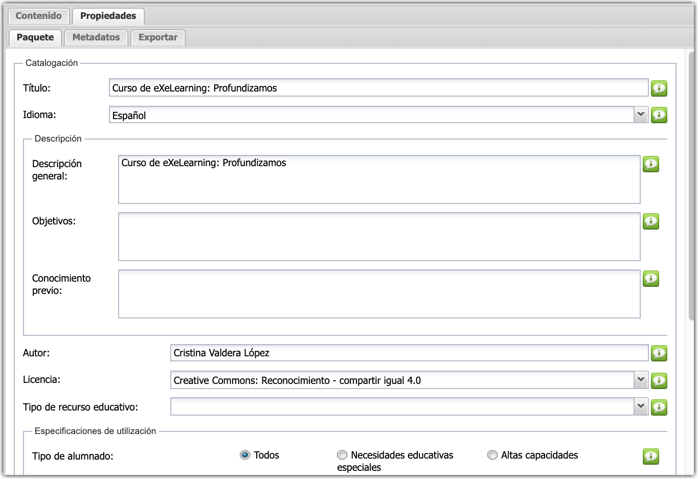
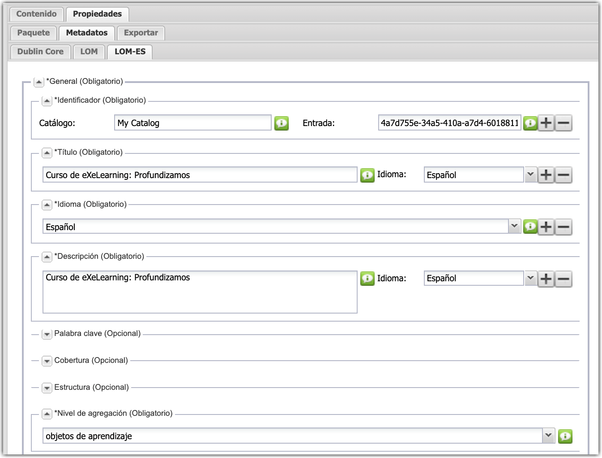
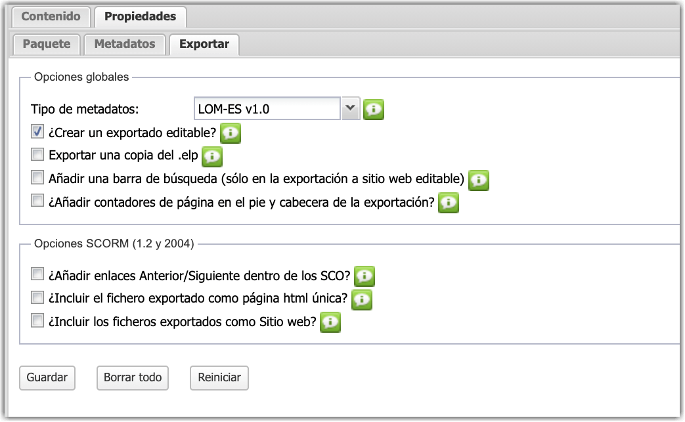
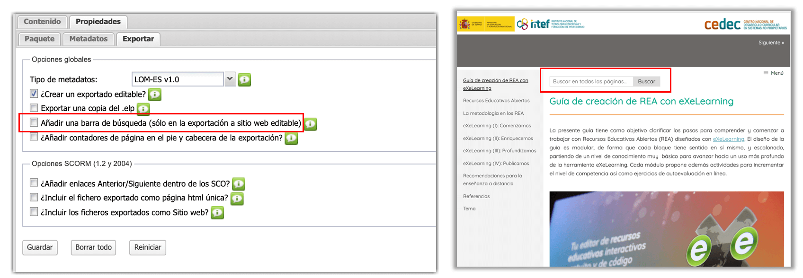

4.2. Opciones de exportación
eXeLearning nos permite exportar en distintos formatos estándar: SCORM, IMS, html, ePub3... En cualquier caso, antes de exportar es conveniente rellenar los metadatos correctamente para facilitar su catalogación.
Metadatos y exportación
Los contenidos creados con eXeLearning están acompañados siempre de una serie de metadatos que ayudan a complementar el recurso y dotarlo de una información adicional que será fundamental para su localización a través de los buscadores.
Por eso, siempre que vayamos a exportar nuestro material, el programa nos recordará que es conveniente introducir los metadatos:
O revisar los datos ya introducidos para asegurarnos de que son correctos:
Catalogación del recurso
Gracias a las opciones ofrecidas por eXeLearning podemos hacer una catalogación exhaustiva de nuestro recurso de acuerdo al estándar LOM-ES.
En la pestaña de Propiedades, con el Modo Avanzado activado, nos aparecerán 3 subpestañas.
Paquete
En este apartado indicaremos los datos básicos de nuestro recurso.

Metadatos
En este apartado podemos catalogar nuestro recurso según los estándares Dublin Core, LOM y LOM-ES.

Exportar
En este apartado podemos activar opciones relativas a la exportación. Como vemos, la opción de exportar SCORM está activada por defecto.

Barra de búsqueda
Podemos añadir una barra de búsqueda al recurso, especialmente útil en recursos con muchos contenidos. Esta barra de búsqueda tendrá un formato y una posición distintas en función del estilo elegido.
Para activarla, en la pestaña de Exportar marcaremos la casilla "añadir una barra de búsqueda (solo en la exportación a sitio web editable)". Como el título indica, esta barra de búsqueda solo aparecerá en las exportaciones como sitio web. A continuación vemos dónde se localiza esta opción y un ejemplo de cómo queda en esta misma guía.

Aparece Clavis. Clavis dice ¿Necesitas ayuda con los metadatos y la catalogación?
La Guía Técnica del Proyecto REA Andalucía, muestra una serie de pasos y recomendaciones mínimas para rellenar la catalogación.
Obra publicada con Licencia Creative Commons Reconocimiento Compartir igual 4.0